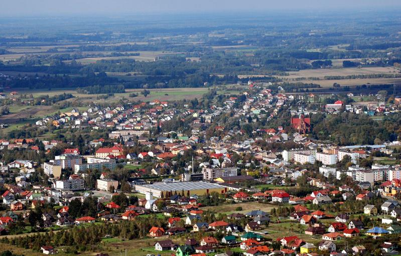
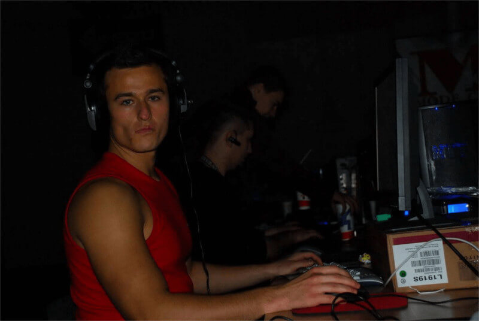

Młodość
Jarosław "pashaBiceps" Jarząbkowski urodził się w niewielkiej wiosce w województwie mazowieckim w Nasielsku, 11 kwietnia 1988 roku. W latach młodości nie miał dużo do robienia w tak małej wjosce, więc kiedy pojawił się internet i pierwsze kafejki internetowe, zaczał grać z swoimi znajomymi w Counter Strike 1.6. Tak narodziła się jego pasja do CS'a.
Początki świetności
Młody PashaBiceps już po paru tygodniach grania w kafejkach internetowych stał się najlepszym graczem w swojej wsi. Gdy sam zauwazył że jego poziom umięjętnosci jest naprawdę wysoki, zaczął uczestniczyć w pierwszych amatorskich turniejach. Już w wieku 16 lat dołączył do pierwszej oficjalnej drużyny Counter Strike'a. Jarek wraz z upływem czasu stawał się coraz lepszy, lecz trzeba było zacząć zarabiać aby zapewnić dobrobyt swoim bliskim, Pasha zaryzykował i postanowił poświęcić się swojej pasji w 100%, co ostatecznie przyniosło mu duże zyski i miano jednego z najlepszych graczy na świecie.
Rodzina
Jarosław poznał swoją przyszłą miłość w pierwszej klasie gimnazjum i szybko się w sobie zakochali, już w wieku 19 lat wyjechali do Warszawy. Lecz życie w wielim mieście nie było łatwe. Pasha jeszcze w tedy nie zarabiał dużo i czuł się źle z tym że jego żona musi pracować aby ich wyżywić. Zaczął studiowac fizjoterapie ale pasja do cs'a pozostała. W 2017 roku został ojcem, urodziła mu się córka.